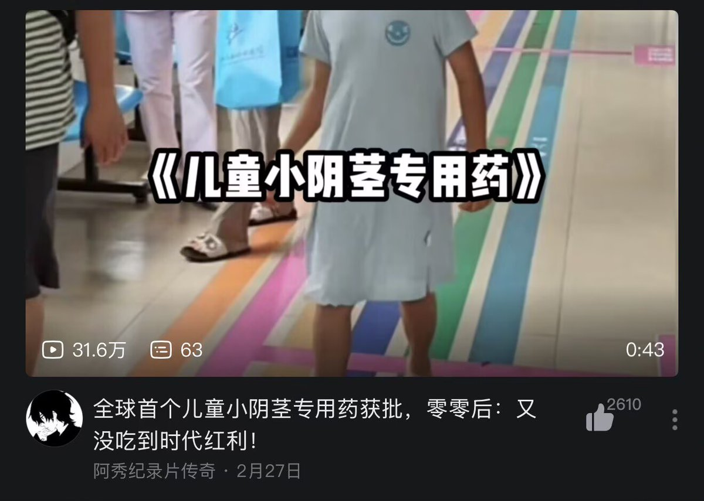

你这样的见个雌二醇就能想到违背伦理道德诱导魅惑强制洗脑就开始心痒痒起反应,就适合被调教成雌男小母狗那么敏感那么会想入非非,还觉我男人被诱导,得了吧其实就你己想的。要是把小药片轻轻放到你舌头上,是不下边都要兴奋地流水了?看见一屋子针剂是不走不动道了?像你这样极品的敏感度，我们这也有不少呢


你妈了逼的普通人都来了，平台推其他处方药的还少了啊。这个就不是【普通】药了？不能见【普通】人了？你们【正常】【普通】男的一到能带入到自己的男性顺性别需求的时候又不是这个嘴脸了，又不伦理道德冲突了？又不带坏了？又不宣传了？又不未成年没有判断能力了？ https://t.co/NDUMg9VDNd https://t.co/CWD5hPUL10